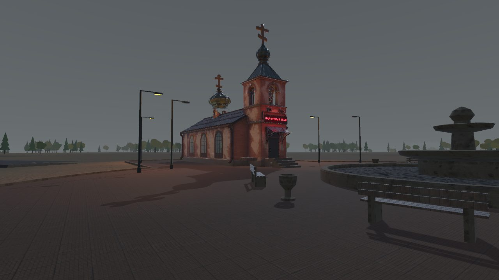
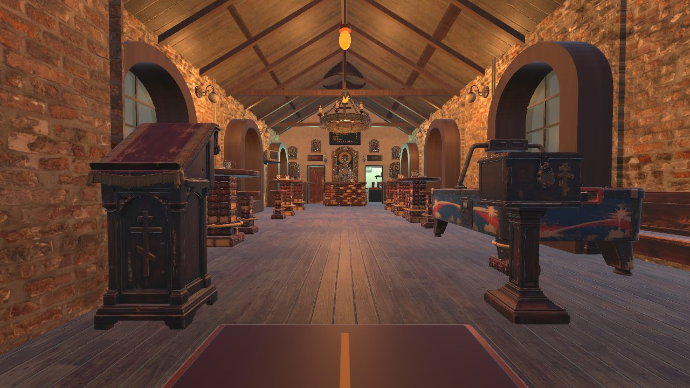
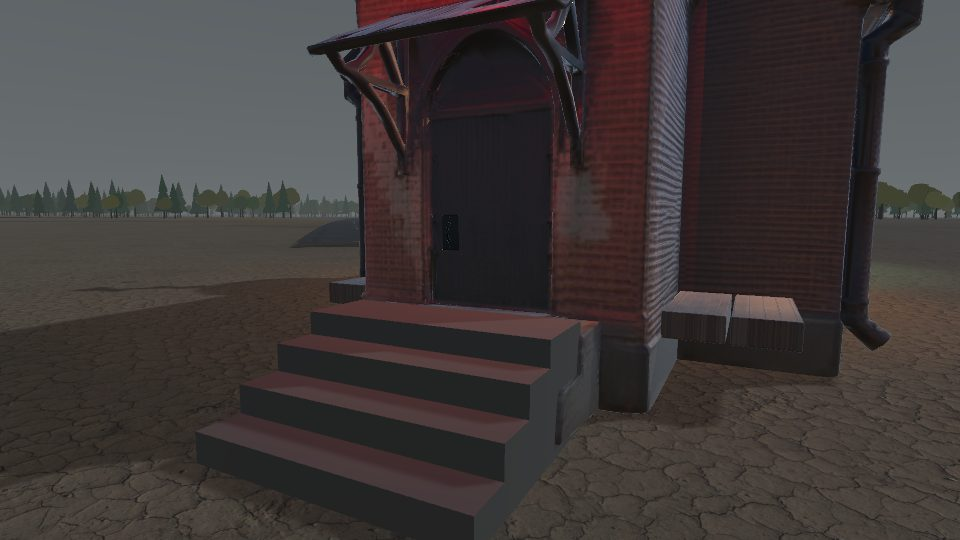
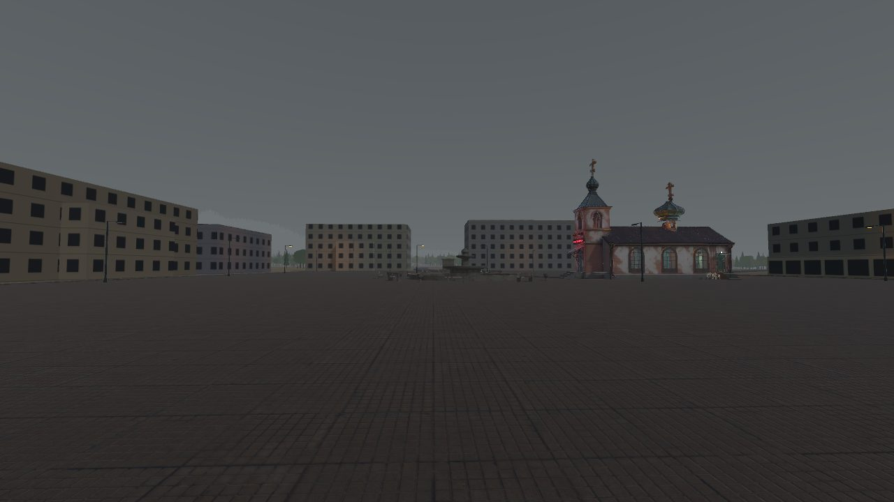

ZERO BLOCK
Мы делаем игры с нуля.

«Вот бы была одна конторка, которая решала бы всё…»— с этой фразы всё и началось
ОБ ИГРЕ ДНЕВНИК РАЗРАБОТКИ«КОНТОРКА»
Открытый мир. Серый постсоветский городок. Начало 2000-х.
Туман, дождь, цинизм и чёрный юмор.
ЗАВЯЗКА
- Безработный герой сидит на картонке у бара «Старый храм».
- Из бара вываливается женщина — кричит про зарплату, кредиты и закон, выливает помои и бросает: «Вот бы была одна конторка, которая решала бы всё».
- Герой слышит фразу — и создаёт компанию «Конторка».
- Сначала он хочет помогать людям.
- Но власть затягивает. Конторка обрастает адептами и начинает подминать город: ларьки, магазины, мотели, полицию, мэрию…
Путь с нуля. Захват города. Вертикаль власти — снизу вверх.
Бар «Старый храм» — бывшая церковь, которую священник переделал в бар. Стоит в самом центре города, на площади с фонтаном.
Здесь родилась идея Конторки — и это единственное место в городе, которое она никогда не подомнёт.
ДНЕВНИК РАЗРАБОТКИ
Все кадры — из движка, ранняя версия. Серые коробки — временные заглушки зданий.
Город обрёл центр
- Карта города 3 × 3 км: рельеф, море, горы, озеро, леса, промзона, кладбище, жд и военная часть.
- Дороги, перекрёстки и железнодорожные переезды; тротуары в городской части.
- Бар «Старый храм» перенесён в Unity — с интерьером, светом и дверями, которые открываются.
- Главная площадь с советским фонтаном, аллеей, пустым постаментом и фонарями — часть из них мигает, часть давно умерла.
- Вокруг площади — кольцевая улица и первые кварталы: горсовет, гостиница, дом культуры, кинотеатр, универмаг, почта и хрущёвки.



- Улицы внутри кварталов, мосты и плотина у озера.
- Замена заглушек настоящими зданиями.
- Атмосфера: туман, дождь, ночной город.
О НАС
ZERO BLOCK — маленькая независимая студия.
Мы начинаем с нуля — как и наш герой. Без бюджета студии-гиганта, зато со своей историей, своим городом и упрямством довести дело до конца.
Делаем игру на Unity, модели — в Blender. Лор, персонажей и квесты пишем сами.
Ищем людей, которым близка атмосфера постсоветских окраин начала 2000-х — серые дворы, туман и истории, которые не принято рассказывать.
ВАКАНСИИ
Если хочешь делать «Конторку» с нами — напиши в Telegram и расскажи, что умеешь. Портфолио приветствуется.
Лор-директор в приоритете
Мир, история города, персонажи и фракции. Держит канон.
Сценарист
Квесты, диалоги, сцены. Чёрный юмор приветствуется.
Художник по окружению
Дворы, улицы, интерьеры постсоветского ПГТ.
3D-моделлер
Здания, пропсы, транспорт — с прицелом на игровую оптимизацию.
Звукорежиссёр
Эмбиент, звуки города, музыка.
Тестировщик игры
Играть, ломать и честно рассказывать, что не так.
Тестировщик ПО
Сборки, баги, отчёты.
КОНТАКТЫ
Связь через Telegram.